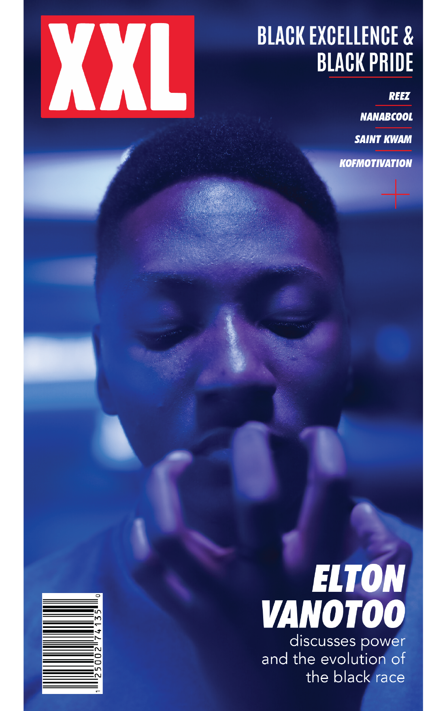

Flexing my graphic design skills here
A poster a day

I noticed Magdiel Lopez and Temi Coker's a poster a day challenge and took it on. I did this for just a week but I'm pretty happy with the turn out. I wonder what would happen if I kept at it for a month.
Miscellaneous
These are works that I haven't really organized yet. There's so much on my desktop right now. But I think these give a gist of what I am capable of doing with typography and pictures.